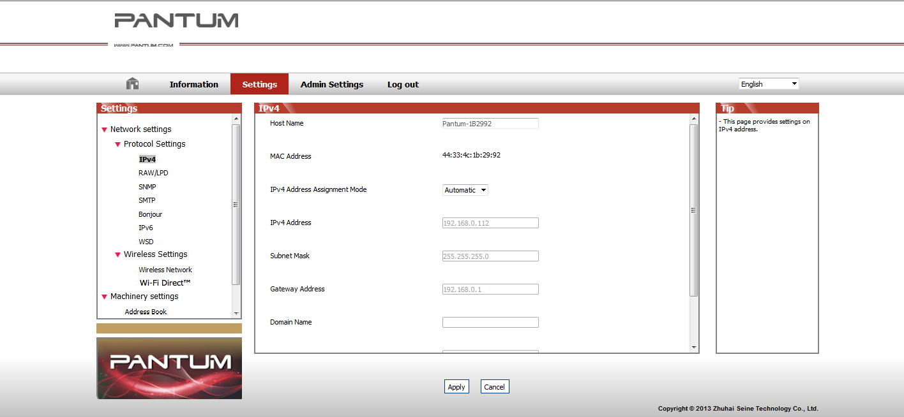

4. Wired Network Settings (For wired network printer models)
You may need to set some network parameters on the printer. These parameters can be set from the embedded Web server.
4.1. Set IP Address
The IP address of the printer may be automatically obtained through DHCP function or set manually.
| Automatic Setting
DHCP automatic setting function is enabled by default on the printer.
1. Connect the printer to the network through a network cable and complete the startup preparation work.
2. The printer will automatically obtain the IP address assigned by the server. The IP address obtained automatically can be used after a few minutes.
|
|
Note:
|
• If DHCP cannot automatically obtain the IP address, the printer will automatically use the default IP address: 169.254.xx.xx.
• Due to the features of DHCP, the IP address of the printer automatically assigned by the network may vary if the printer has not been used for a long time or the network access point changes, which could result in unsuccessful connection to the printer. It is recommended that the IP address automatically assigned by the network is bound to the Mac address of the printer while the DHCP function is enabled.
|
| Manual Setting
Type the IP address in the Web browser's address bar to open the embedded Web server.
1. Click Settings in the navigation bar to open the Settings page;
2. Select Network Settings - IPV4 Settings;
3. Set IP Address Assignment Mode (Manual), IP Address and Subnet Mask. Other items are optional;
4. Click Apply to save the settings.
4.2. Install the Printer to Network
In this setting, the printer is directly connected to the network and can be set to allow all computers on the network to print directly on the printer.
1. Before starting the printer, first connect the network cable to the network port of the printer to establish direct connection to the network.
2. Start the printer and wait until the status indicator on the control panel displays Ready status, as shown below.

3. Insert the printer CD into the computer. If the software installer does not start, browse to the "setup.exe" file on the CD, and double-click to run the file.
4. Follow the operation instructions of the installer.
5. Continue to complete the installation.
4.3. Setting Network Products
4.3.1. View or Change Network Settings
You can use the embedded Web server to view or change IP settings.
1. Long press the "Cancel/Continue" button on the control panel to print Demo information page, and view the IP address of the printer. Demo page can be printed by long pressing the button on the control panel (as shown in the figure below) in the idle status.
2. Type the IP address in the Web browser's address bar to access the embedded Web server.
3. Click Settings tab to obtain network information. Change the settings as needed.

4.3.2. Set or Change Web Server Login Password
Use the embedded Web server to set a network password or change the existing password.
|
|
Note:
|
• The default username is "admin", and the initial password is "000000".
|
1. To open the embedded Web server, please log in first.
2. Click Administrator Settings tab.
3. Type the new password in the Password box and Confirm Password box.
4. At the bottom of the window, click Apply button to save the settings.
4.3.3. Restore to Factory Settings
If you want to reset all parameter settings of the printer, you can restore to the factory settings by long pressing "Cancel/Continue" button when the printer is powered off to power on it and holding for 10 seconds until the printer enters Ready status to finish the resetting work.